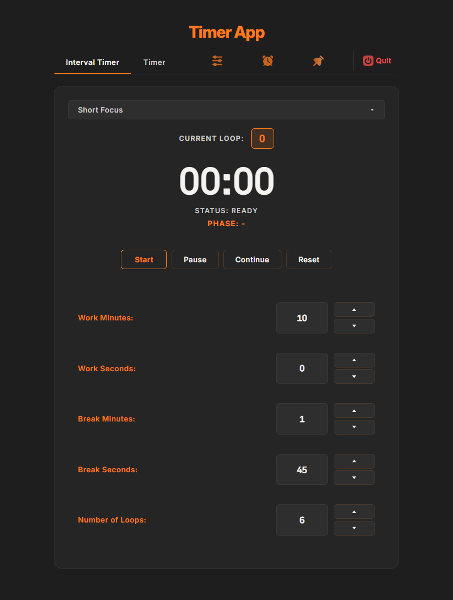

Free · Windows · No account needed
Work. Break. Repeat.
Wake up to your music, not a beep.
An interval & countdown timer whose alarm can be a local file, a YouTube video, or a real Spotify track — plus a background-safe tick loop that keeps counting even while the window is minimized.

